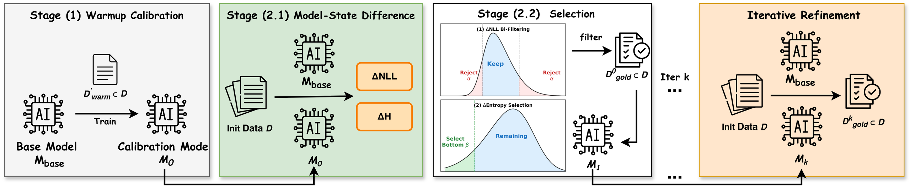
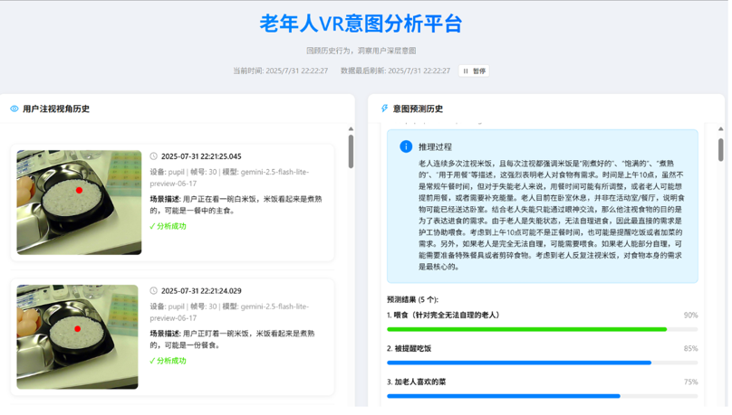

Peking University · M.S. · 2027
张力宇
Liyu Zhang
北京大学硕士，南方科技大学计算机本科。关注 LLM / Agent 的训练、数据与评测，以及稀疏模型和可验证工程智能。
腾讯 · 字节跳动 · 知乎 · A*STAR Singapore · LocationMind Tokyo · 3 篇 SCI 一区 + ACL 2026
经历
模型训练、Agent RL、隐私分类与大模型评测，同时保留早期在新加坡与东京的研究和数据分析经历。
知乎 SoTALab · 模型算法实习生
负责 SWE-bench-Pro 风格长轨迹清洗与代码模型训练。在 16 张 A100 上全量微调 Qwen-3.6-27B，将结果从 50.6% 提升至 53.1%，并将 Qwen3.5-35B-A3B-Base 从 35.4% 提升至 45.3%。
字节跳动 · 模型算法实习生
参与财务 Agent 的小模型强化学习与 Mira TrustLayer 隐私分类，完成 Agentic RL 数据、并行 rollout / reward 验证，并参与 mmBERT → Qwen3.5-4B 的级联隐私检测链路。
腾讯 TEG · 模型评测实习生
负责大模型 STEM 与前端代码生成评测，重构人工评测 SOP，并搭建 OCR + LLM 数据处理链路，支持 SFT / DPO 模型的 Badcase 分析与迭代。
LocationMind · Tokyo · 数据分析实习生
处理 GPS 轨迹数据，通过停留点聚类、逆向 POI 查询与语义信息融合分析用户的 Home / Work / Other 高频活动地点。
A*STAR · Singapore · Research Assistant
研究长序列 Self-Attention 的计算瓶颈并实现 LSH 稀疏注意力；相关思路后来延伸到 PipeFormer 的局部稀疏注意力设计。
研究与项目
保留论文和项目中的关键图，让页面更接近研究者的个人主页，而不是产品宣传页。
Pipeline-Agent & PipeClaw
围绕可验证工程智能，连接显式计划、工具执行、运行历史、瞬态预测与约束校验，支持可复现的管网分析和连续调度。
- Pipeline-Agent 使用 plan.md、Python 执行与校验形成可复现的工程计算链路。
- PipeClaw 增加运行历史记忆、PipeFormer Skill 与候选动作的接受 / 修订 / 拒绝闭环。

InstructDiff：warmup 校准、双向 ΔNLL 过滤与对比熵选样。
InstructDiff
比较基础模型与校准模型的 NLL 与对比熵变化进行数据筛选；本人负责代码域 LLaMA3-8B 的筛选、全参微调与评测。
- 代码域选择 20% 数据，在 HumanEval、MBPP 与 BigCodeBench 上完成验证。
- 论文代码域平均分 43.0 → 45.1，超过全量训练。

灵犀智慧养老原型界面。
教育
计算机本科背景，硕士阶段将 AI 系统与智慧城市、基础设施场景结合。
北京大学
国土空间规划（智慧城市与大数据）硕士
南方科技大学
计算机科学与技术（图灵班计划）本科 · GPA 3.80 / 4.00（22 / 221）